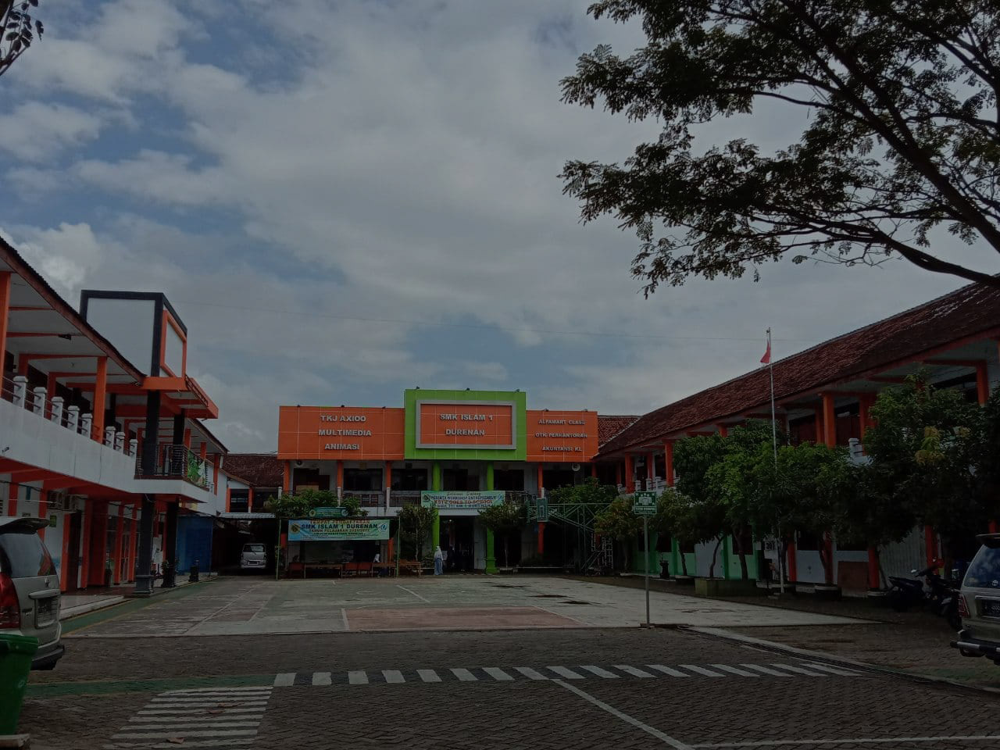

SMK Islam 1 Durenan sebagai SMK pusat keunggulan
SMK Islam 1 Durenan berdiri pada tahun 1988 dan berada di bawah naungan Lembaga Pendidikan Ma’Arif NU Kabupaten Trenggalek. Pada awal berdiri SMK Islam 1 Durenan membuka 2 jurusan yakni: Administrasi Perkantoran (Sekretaris) & Akuntansi, dengan jumlah peserta didik angkatan pertama adalah 156 siswa yang di bagi menjadi 4 (empat) kelas. Pada awal tahun ajaran 2003/2004 SMK Islam 1 Durenan menambah jurusan baru yakni Teknik Komputer dan Jaringan dan Tata Busana, pada tahun 2010/2011 menambah jurusan baru lagi yaitu Multimedia. Selanjutnya, untuk Tahun 2015/2016 menambah 3 Jurusan lagi yakni: Animasi, TKJ Axioo dan Pemasaran. Hingga saat ini, SMK Islam 1 Durenan memiliki enam jurusan unggulan yakni Teknik Komputer dan Jaringan (TKJ), Multimedia (MM), Animasi (ANM), Pemasaran (PMS) Alfamart, Akuntansi dan Keuangan Lembaga (AKL), dan Otomatisasi Tata Kelola Perkantoran (OTKP). Lebih dari 30 tahun mengabdi dalam dunia pendidikan, SMK Islam 1 Durenan terbukti makin dipercaya masyarakat dan dunia industri. Banyak industri yang menjadi mitra pendidikan dan mitra kerja bagi SMK Islam 1 Durenan, diantaranya Alfamart Class, Axioo Class Program, Oracle Academy, Indomart, KS-TV, dan masih banyak lagi. Selain itu, SMK Islam 1 Durenan juga aktif dalam menyukseskan berbagai program pemerintah baik yang secara langsung berkenaan dengan pendidikan atau pun yang bersifat sosial kemasyarakatan. Sebagai wujud bukti dari profesionalisme kerja dan pengabdian, SMK Islam 1 Durenan sejak tahun 2014 telah bersertifikat SNM ISO 9001:2008.